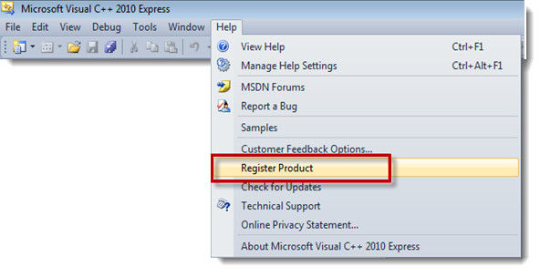
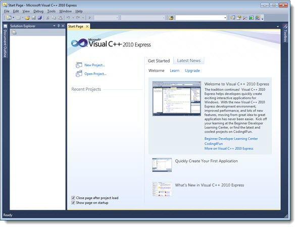
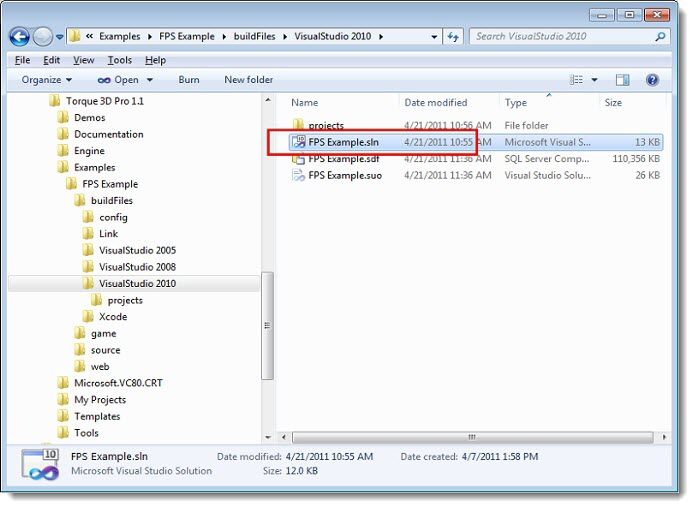
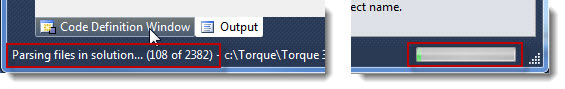
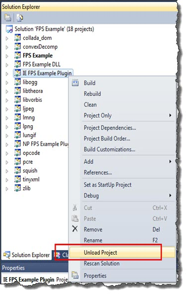
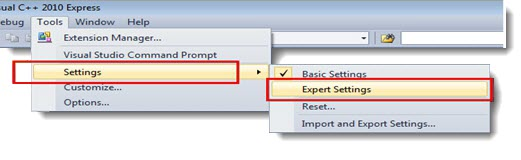
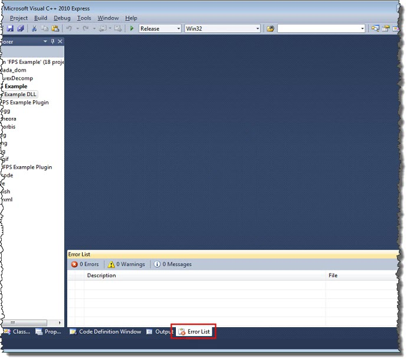
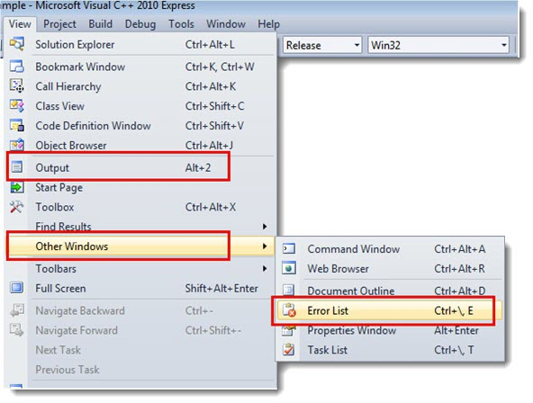

Setup the VC++ 2010 Development Environment
Now that we have all of our required SDK's and software installed, we can now start setting up our development environment.
The following check list of software should already be installed before proceeding with this article:
- Visual Studio C++ 2010 Express
- PhysX SDK (if required by your project)
Note: You can use any C++ compiler for your projects. For this
tutorial we decided to use Visual Studio C++ Express as it is free and
easy to set up with the Torque 3D Source code.
Getting Up and Running
1) Run Visual Studio 2010 either from the Windows start menu or from
the icon created by the installer, and then register the product if you have
not already done so. Register the product from the main menu by
selecting Help > Register Product. Registering is free and disables
the thirty-day limit imposed by Microsoft.

2) If this is your first time using the product, take time to examine the menus and the rest of the IDE. Don't worry, it
will all become familiar after a while.

Setting Up the Solution
Before we can start compiling our source code, we need to tell the
compiler where we have installed all of our SDK Components. Initially we
will start with the minimum requirements: DirectX.
Note: Adding SDK components in the 2010 version of VC++
Express is now done on a solution-by-solution basis rather than the
compiler basis in prior Visual Studio products. We will use the FPS
Example solution for this guide.
3) Open the FPS Example solution file. If you installed to the default location it should be:
C:\Torque\Torque 3D Pro 1.1\Examples\FPS Example\buildFiles\VisualStudio 2010\FPS Example.sln

4) Once the solution has been opened, wait for the IDE to finish parsing your solution files. This will
set up all of your dependency directories for you.

5) Visual Studio 2010 Professional is required to compile ActiveX
controls. The Torque 3D Internet Explorer browser plug-in project
requires ActiveX so we need to unload this project or our builds will
fail. To do this, right-click IE FPS Example Plugin project and select
Unload Project.

6) By default, Visual Studio will be using its Basic Settings. We need
to change it to use Expert Settings so that all the menu commands that
are required to build Torque 3D will be exposed for our use. To do this,
select Tools > Settings > Expert Settings.

7) All of the DirectX file paths should now be set and we have switched
to Expert Settings. Next direct your attention to the Visual Studio
interface layout. If you look at the lower section of the interface, you
will notice a tabbed section. What we are looking for here is the Error
List tab and the Output tab as shown below:
(click to enlarge)

If these tabs are not visible you can make them so by selecting each of the following commands from the menu:
View > Output
View > Other Windows > Error List

If the Output window is floating,
drag it to the lower section and dock it. We are now ready to look at the
Torque 3D source code. Before we move on, please have a look at this
section of documentation explaining the layout of the source code
folders: T3D Engine SDK Tour .
When you are ready we can move on to the final steps of this tutorial Part5 - Working with a T3D Project .
|